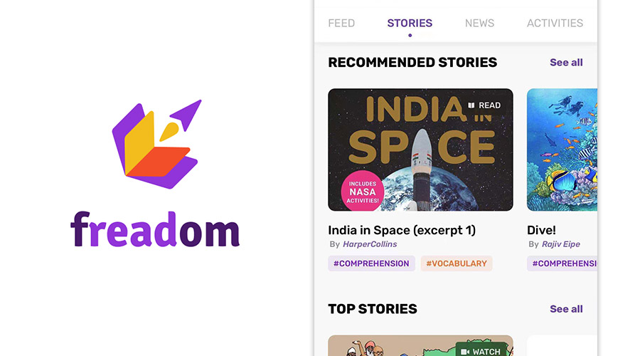

Relevant Diary (in Chinese):
Interview — D5P354;
Internship — D5P361,
D5P363,
D5P367,
D5P369,
D5P372,
D5P373,
D5P379,
D5P381,
D5P387,
D5P392
Recsys Research
- 2020 December — 2021 June (6 months)
- Stanford, CA
- Stanford Graduate School of Business, Social Impact Lab
- Recommendation System for Freadom, an English-learning app
- Susan Athey (prof), Ayush Kanodia (PhD)
PyTorch, sklearn
Introduction
A recommendation system (recsys) serve one purpose: help users discover the items they want. For example, finding 20 videos that a user may be interested in, out of billions of videos on YouTube.
There are two basic methods for recsys. In simple words:
- Content Filtering tries to match up users with items, based on user and item features such as user age, user language, item category, item's author, etc.
- Collaborative Filtering looks at other users who have liked similar items, and recommends based on what else they have liked.

image source: Data Flair
Task
I needed to implement a recommendation system for an app named Freadom, and design experiments to test its performance.
Freadom is an English-learning app based in India. It provides thousands of "stories" on its platform; children read stories on the app, and their English skills get improved.

Freadom app logo and iOS screenshot
Specifically, I needed to design algorithms for 2 different sections.
- Today For You — generates 5 recommended stories to the user, shown on the home page; the list is updated each day
- Similar Stories — after a user finishes reading a story, recommends a new story based on the one just finished
Action
For "Today For You", I implemented or tried various flavors of matrix factorization. I tuned the algorithm with different hyperparameters, and tried applying filters to the training data to see if this can facilitate training.
For "Similar Stories", I used word2vec
to construct an embedding for each story, based on their text features
(category, description, contents). I then used cosine similarity
to find a nearest story as recommendation.
Result
My
Other research topics View / Hide
Click "View" to read about other topics I explored in the research assistantship: (1) evaluation metrics; (2) cold start problem; (3) data visualization.
Evaluation Metrics
The Story View / Hide
Click "View" to read about my feelings about this internship, as well as what I learned from it.